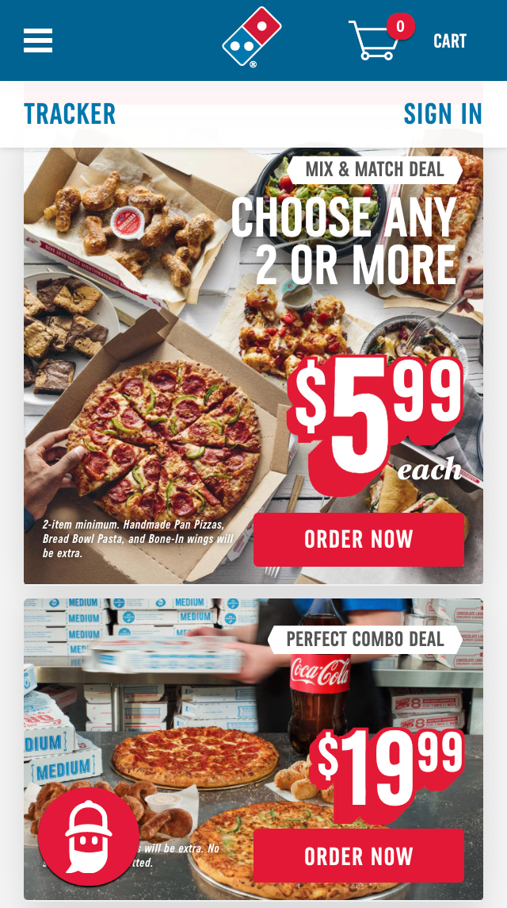
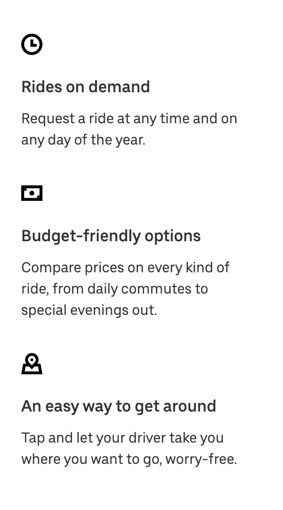

ALIGNMENT
Dominos Pizza
Dominoes alignment is right-aligned for the two images here and it's able to make sure all the boxes and images line up together rather than the boxes being all over the place. On both left and right we see everything aligned and the same amount of white space and gaps are applied throughout the page.
PROXIMITY
Apple
Apple's website demonstrates so many great examples of all the design principles and i thought this image showed a clear demonstration of proximity. All relevant information is grouped next to each other (the menu on top, the different iphones below the menu, the apple card information below that, and the information for the iphone 12 mini even uses proximity within its section to show pricing and thing like that). You'll also notice they changed the colors of the backgrounds for each section of related information. This makes it clear to the user which information is correlated and which is not.
REPETITION
Uber
Uber uses a consistent theme throughout their website by using repeating designs, fonts, colors, and white space. In this image it shows the repetition of icons, fonts, heading sizes, and white space. By repeating elements and styles throughout a website, it gives it a clean look and makes the information seem like it all relates to the same website.